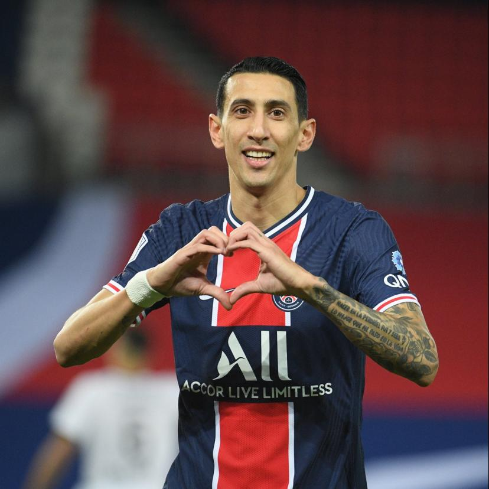

Angel Di Maria est un joueur argentin, né le 14 février 1988 à Rosario,
qui a évolué au PSG entre 2015 et 2022. Recrue légendaire de l'ère QSI, il impressionne
par sa lucidité face au cage, sa capacité de dribble ainsi que sa finition.
Il combine bien avec Cavani; leur duo fait rêver les fans du PSG et ses adversaires. Vrai
chouchou des foules et étant d'une efficacité sans nom sur le terrain, Di Maria s'impose
comme une légende évidente du club pendant son passage, qu'il décrit lui-même comme une
des plus belles périodes de sa vie. Il va jusqu'à affirmer que d'avoir quitté le club a
été sa plus grande erreur. Il aura remporté 18 titres pendant ses 7 années au PSG, et sera
devenu le meilleur passeur décisif du club. A son départ, le peuple parisien
pleure la fin d'une belle histoire et le club organise des adieux gargantuesques
pour son ailier icône.
Au niveau international, l'argentin impressionne aussi.
Il aura beaucoup de succès avec la sélection argentine, avec qui il gagne la copa America
en 2021 ainsi que la Coupe du Monde 2022. 'El fideo' fait aussi beaucoup d'effet
dans le football de clubs européen en passant par des clubs à la renommée immense:
Real Madrid, Man.U, etc.